This week I learned about Cascading Style Sheets (CSS). CSS is used to style HTML markup such as modifying font sizes and types or by changing the overall page style with margins or padding. CSS uses selectors to style elements. There are different types of selectors:
Type selectors - which select based on an element's type (e.g. paragraph, header 1)
Class selectors - which select based on an element's assigned class(es) (e.g. post)
ID selectors - which select based on an element's assigned ID (e.g. week3)
Attribute selectors - which select based on attributes of tags (e.g. the href of a link)
Pseudo-classes and Pseudo-elements - which select based on certain element states (e.g. a:hover, when a link is hovered over)
Combinators - which are used to combine multiple selectors together (e.g. article > p selects all paragraphs that are direct children of articles)
I also learned that not all browsers treat CSS in the same way, and that a stylesheet called "normalize.css" exists that can be used to have all browsers treat your CSS identically.
Week 4: Styling fonts
Published on
This week I've learned about styling fonts, fallback fonts and importing external fonts.
I learned that there are two different ways to import external fonts, either using a <link> tag or by using @import in a css file. I was curious about the difference between the two: if there was any real difference and why the example chosen was to use <link> instead of @import.
I found that the reasoning was performance (Souders, 2009): it's not recommended to use @import, as it has a performance overhead on the loading of the site. @import doesn't always download stylesheets in parallel - they are downloaded sequentially, one after the other if any <link> tags are used to load fonts or if @import is used across multiple stylesheets. This means that the site will take longer to load if you mix @import and <link> or have multiple stylesheets using @import. To contrast, if <link> is used, each font will be loaded in parallel, regardless of where it is used, so the loading time of the website will only be affected by the longest-loading font.
Week 5: Responsive Web Design 1
Published on
In this week's tutorial, I learned how to create a responsive website, using media queries and css grid layout structure. As well as this, I spent some time modifying the site to my own liking, and I set up a git repository on the brighton domains server so that I can work with the files in a way that is familiar to me. This also means that I have a much more natural way of keeping track of what I've done each week, which is a very happy bonus.
The commits I made this week were as follows:
Indentation, fix stylesheet.css
Change h1 style, improved page layout, changed media query I didn't like the way the header was styled - it was still using placeholder css, so I've had it use the same font as the rest of the page - I feel that Sans-Serif suits the style of the page much better, and given it a very dark teal for the colour. Also changed the link colours so they behave how a user expects, but they use slightly calmer colours than default. I made the main section take up all three columns in the largest layout, I prefer this. I am considering adding another media query to widen it again past another threshold, since the page still feels a bit too narrow past a certain point
Improved padding and footer wording
Below, there is a before and after picture for this week.
Before:
The title is pretty ugly, "Go to the top" is in entirely the wrong place, and everything just feels so narrow.
After:
Much easier on the eyes, everything is where it should be, and we're using the right amount of page now.
Week 6: Responsive Web Design 2 - Flexible Media (But mostly accessibility)
Published on
This week's tutorial showed me how to make images and video flexible within an HTML document by utilizing the CSS max-width, overflow and width properties. Therfore, I've updated the images previous to this post so that they are flexible, and all images in this post and future ones will be.
I've spent some (not insignificant) time reading through the tags that I have available (W3Schools, n.d.) to make the HTML of the page more idiomatic and therefore accessible, and read about the code tag. While it's not groundbreaking, it is nice that I can now explicitly say that I'm embedding a code snippet, as well as apply my own styling to that end.
Although I am aware that this page is not available via search engines, I have become interested in improving the SEO of this site, mostly for practice and because it's interesting to learn about, as well as that I have the opportunity to work on the development of a live site, and SEO will be important there. To assist in that, I decided to install a browser extension - Google Lighthouse (GoogleChrome, 2019), as it seemed the most convenient way to check. The good thing that I've found about Lighthouse is that it also gives me a lot of other information - notably accessibility information. So before I did any SEO, I felt I had to review that.
While the site gets a pretty good score, 92, Lighthouse highlighted for me that the contrast ratio between the default colour for links and the background is too low:
Lighthouse reckons the site is pretty accessible, but I'll need to fix the contrast so that everyone can see the links.
Lighthouse also, very helpfully, points me to a website (Deque University, n.d.) that I can use to check the contrast ratio of my colours, and select colours that contrast better. I picked another colour (#0044E6) using their tool, updated the stylesheet from #0090D2 and I am now very happy to report that the site scores perfectly on automated (Dodson, 2017) accessibility tests:
No issues now.
Despite having not actually managed to get to the SEO that I wanted to get to, I do feel that this post in particular is getting a little long, and this is everything that I got through this week, so everything else I want to do right now (including some more media query work) will be for me to do next week.
Week 7: More media queries, new responsive layouts, then media queries in different places
Published on:
This week I've carried on with some of the things I wanted to do last week. The first change I've made is to the images from week 5, and will be matched in any images of the site going forward. I had felt it didn't make sense to show visitors a version of the website that doesn't match their view, especially if I'm trying to show how the site has changed. To match this, I went back into my commit history and found the commits that matched those images. I then took screenshots of the page before and after on my mobile phone, and in the 50em view. I figured that I could use media queries to show and hide these dynamically, by setting the display css property to either none or block, depending on if it should be shown or not.
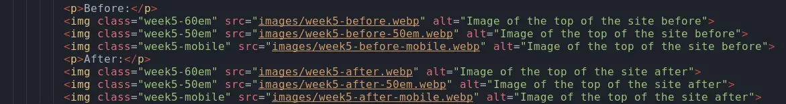
Each image has the class of which view it should be shown in, so each of them can be made to hide and display using CSS
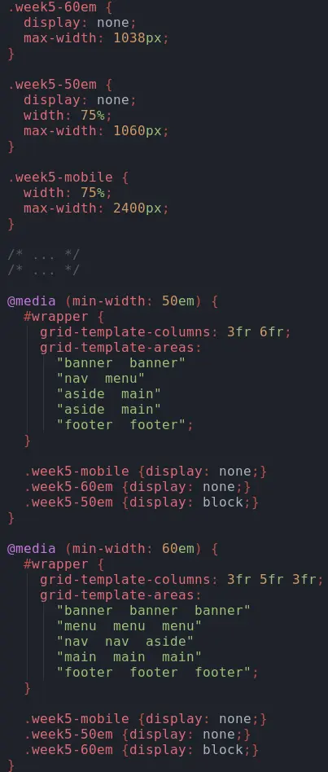
For each class, it's styled differently in each media query. Because of our mobile-first approach, the mobile class is display: block by default, inherited from img.
It worked well, images now change based on the screen the user is viewing from. However, the issue I have with this is that it downloads every image, regardless of which will be shown to the user:
A user could be forced to download up to 461kB of data they don't use!
I knew this could be fixed with lazy loading, but that would require Javascript, I want to do this using only HTML and CSS. I did some research (Swimberghe, 2019, MDN Contributors, 2023b, MDN Contributors, 2023a) and found that it's supported by use of the <picture> and <source> tags. I can define multiple <source>s for one <picture> element, and by using media queries, the browser will select the correct one and only load that image. I also made sure to give each <source> a type attribute, as that should save a round trip to the server (no need to ask the server the MIME type of the data). All of this also means I can remove the CSS I wrote to do this earlier, which is a shame that I wasted some time on it, although it was good practice of media queries so I'm not too fussed. It was also interesting to learn that media queries can also be used within HTML as well as the CSS.
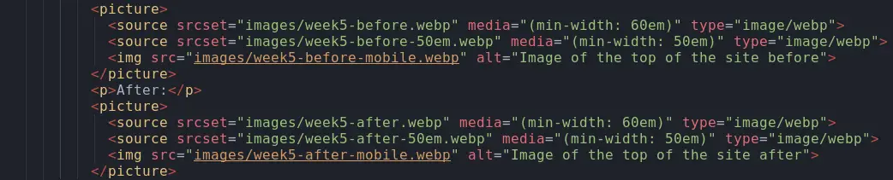 and tags">
Now the browser knows immediately which images to load. This also looks much clearer to read as code.
Anyway, with those changes made, the network graph now looks like this:
Now you can see that for week 5, only the two images the user needs get downloaded. No wasted bytes.
Much better.
I want the nav bar to be horizontal - it's been irritating me. I used W3Schools (n.d.) to learn how to do it, and now it works exactly how I want. All I needed to do was change the style of nav ul to float: left; and the style of nav li to display: inline;
The tutorial this week was more responsive layouts: like flexbox and multi-column. While I dont really feel that these new layouts suit this page, so I won't be changing it, I should really use them somewhere. I figured that I could use flexbox on the contact page to have a portfolio of sorts below the contact form that we'll do next week.
I've done that, made a very simple selection of projects and placed them all into cards, with a description of the project and a link
to the project itself.
Week 8: Contact form
Published on
This weeks tutorial is the last where we'll have something explicit to do, the instructions this week showed me how
to put that contact form I mentioned last week into my contact.html page.
I've finished the tutorial, now I've got a basic form on my contact page. I did make sure to increase the height
of the textarea as by default it just feels quite small. I'll style it so it suits the rest of the page.
The first thing I've done is apply a style to the whole contact page that is consistent with the home page.
Before:
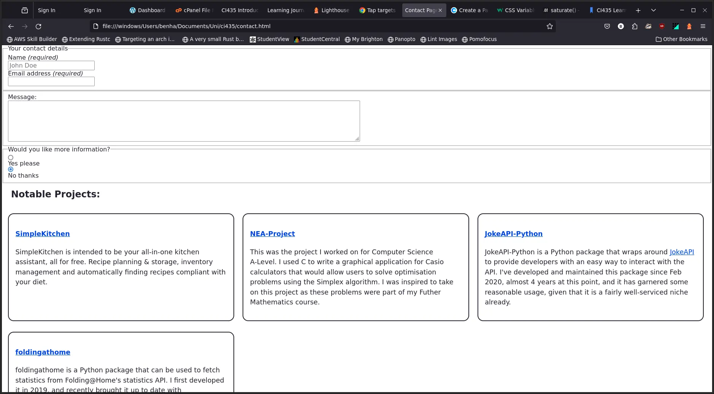
After:
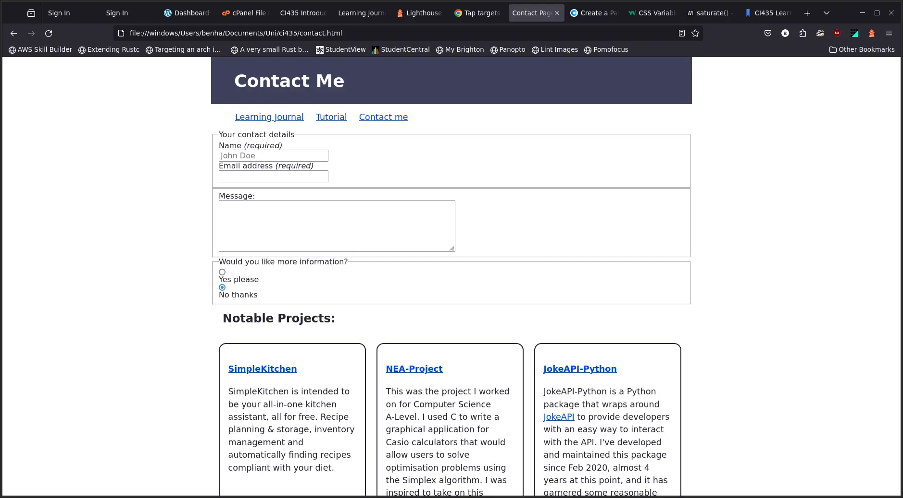
Week 9: Formative feedback
Published on
This week there wasn't any tutorial work, but I did get formative feedback on the site so far. The feedback I got was good, although noted that I needed to provide evidence of validation in the form of screenshots, and that I should consider combining the code that I wrote/changed with the visual change within the site. Thankfully, I have a git history that means I can do this retrospectively very easily. So, I can revert the code to various states, screenshot the code and then insert them in the relevant places.
I also was told that I should provide some more context with the images, so I've changed them all to be figures, and now I can caption them all.
Now would be a good time to validate, so I'll do that.
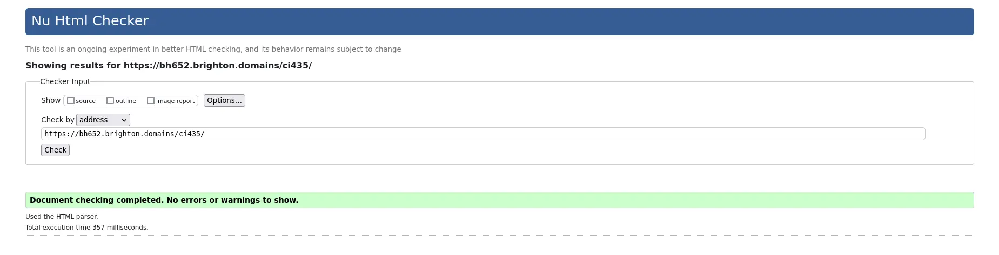
No errors on the HTML.
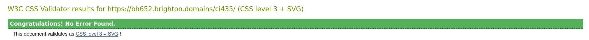
And none on CSS either.
Week 10: Finishing off
Published on
This week I'm finishing. I'll do that tutorial page I've been putting off, and I'll wrap up all the small bits on the rest of the site. First up is the tutorial page. I made a design for myself so I know how I need to lay out the grid:
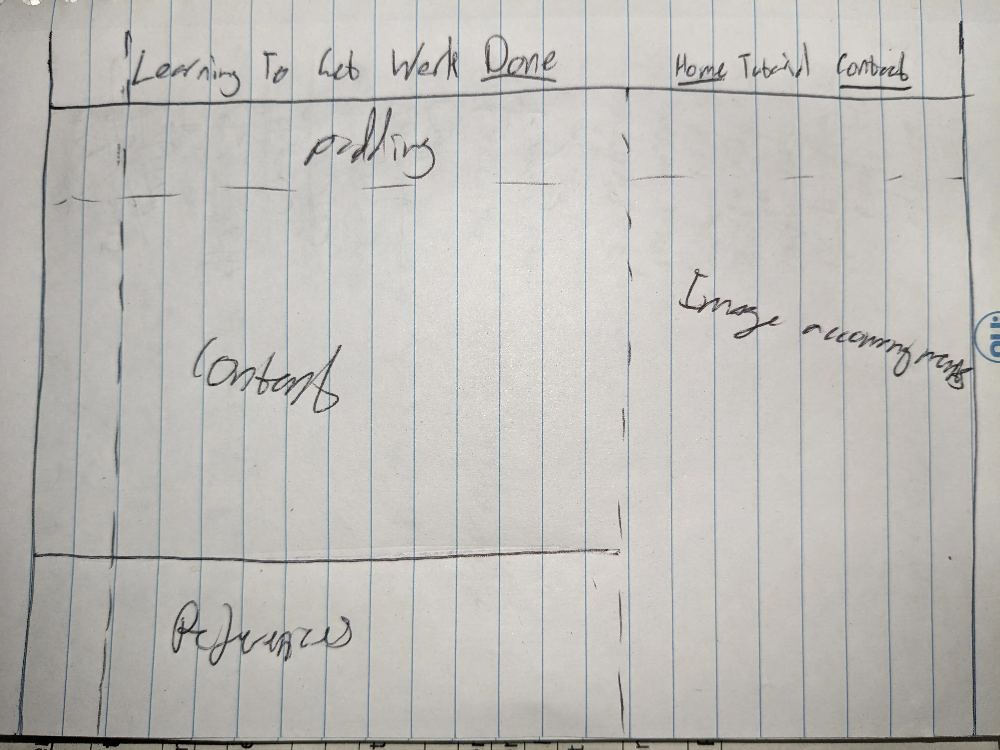
Something to go off, at the very least.
I gave that design a really good go and I just don't think it's suitable, I'm going to opt for a more basic design instead, with the images inline. The design I had wanted to use would have had them appear in the right column next to the text refering to them, but the css grid is complicated and confuses me. I do feel it would be much easier to do it with more than one stylesheet (i.e. one per page), but I can't do that.
I won't draw out the new design because it'll just be everything in one column, images displaying as block within the text, with their captions. I've done that, here it is:
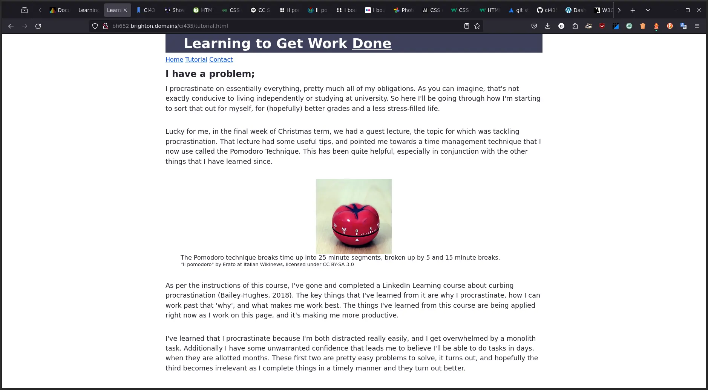
The final tutorial.html page
Now that's finished, I want to clean up this page then the contact page. First is to properly reference in Harvard format. Instead of footnotes like this, I should be using (Last Name(s), Date). I'll go through and change that, and order the references at the bottom to be alphabetical. Not really any markup change worth talking about so I won't show it. One thing I do want to do with the references is highlight them when you click on them, that way it's clear which one you want to be looking at. I know I can use css animations for this, but I'm not totally clear on it, so W3Schools (n.d.) is where I've gone, as well as StackOverflow where I found an answer explaining how to use the :target pseudo-class to select internal links that have been clicked (Thomas et al., 2023). It looks great, here's the changes I made to the CSS:
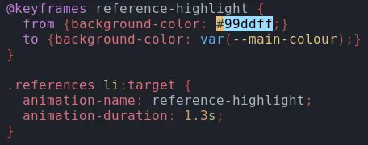
Pretty easy, and it's a really helpful addition.
Contact page now, I want to style the form, which shouldn't take too long. Mostly a lot of small tweaks to have it how I want, using some selection by attribute for the CSS of the radio button:
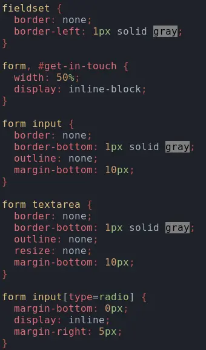
And here's what the finished contact.html page looks like now: